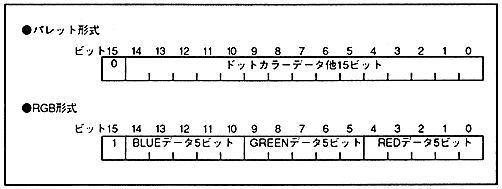

Sprite character data is available in both pallet format and RGB format, similar to the scroll screen. If the number of bits per dot is 16 bits and the data in the frame buffer is only in palette format, all 16 bits can be used with the bit configuration specified by the sprite type. However, when palette format and RGB format data are mixed, the most significant bit is used to determine the color format, so set it to 0 for palette format data and 1 for RGB format data. At that time, the palette format data is processed with the value of the most significant bit (priority bit or shadow bit) of the specified sprite type as 0.
Figure 9.2 shows sprite data when palette format data and RGB format data are mixed.
Figure 9.2 Sprite data when palette format data and RGB format data coexist
